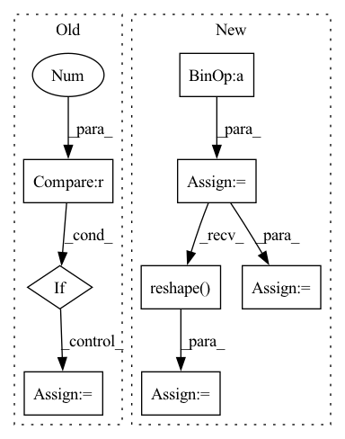

Pattern ID :1574

Before Change
log_det = -torch.log(torch.abs(1 + torch.sum(self.w * u)))
if log_det.dim() == 0:
log_det = log_det.unsqueeze(0)
if log_det.dim() == 1:
log_det = log_det.unsqueeze(1)
return z_, log_det
After Change
u = self.u + (torch.log(1 + torch.exp(inner)) - 1 - inner) \
* self.w / torch.sum(self.w ** 2)
dims = [-1] + (u.dim() - 1) * [1]
u = a.reshape(*dims) * u
inner_ = torch.sum(self.w * u, list(range(1, self.w.dim())))
z_ = z - u * (lin / (1 + inner_)).reshape(*dims)
log_det = -torch.log(torch.abs(1 + inner_))
return z_, log_det
In pattern: SUPERPATTERN
Frequency: 3
Non-data size: 8
Instances
Fragment ID: 7061993
Project Name: vincentstimper/normalizing-flows
Commit Name: 2e3c8bac852694af68f42ff283b2d834aa19bdb9
Time: 2022-12-19
Author: vincent.stimper@gmail.com
File Name: normflows/flows/planar.py
M Class Name: Planar
N Class Name: Planar
M Method Name: inverse(2)
N Method Name: inverse(2)
M Parent Class: Flow
N Parent Class: Flow
M File Name: normflows/flows/planar.py
N File Name: normflows/flows/planar.py
M Start Line: 75
M End Line: 92
N Start Line: 69
N End Line: 80
'>
Before Change
HH, WW = kernel_size
same_size = HH == WW == stride
tiles = (H % HH == 0) and (W % WW == 0)
if same_size and tiles:
x_reshaped, res = max_pool_2d_forward_reshape(x.data, kernel_size, stride)
ctx.method = "reshape"
ctx.x_reshaped = x_reshaped
else:
After Change
HH, WW = pool_size
OH, OW = get_conv2d_output_size(H, W, pool_size, stride, 0)
x_reshaped = x.data.reshape(N * C, 1, H, W)
x_cols = im2col(x_reshaped, HH, WW, 0, stride)
max_idx = np.argmax(x_cols, axis=0)
res = x_cols[max_idx, range(max_idx.size)]
res = res.reshape(OH, OW, N, C).transpose(2, 3, 0, 1)
res = tensor.Tensor(res, requires_grad=x.requires_grad, is_leaf=not x.requires_grad)
ctx.x_cols = x_cols
ctx.max_idx = max_idx
ctx.dims = (N, C, H, W, HH, WW)
ctx.save_for_backward(x)
'>
Fragment ID: 7061929
Project Name: pabannier/nanograd
Commit Name: 4342a037a11ec86fc8635e8cf45a44a7ef13561b
Time: 2020-12-29
Author: pierreantoine.bannier@gmail.com
File Name: nanograd/nn/functional.py
M Class Name: MaxPool2d
N Class Name: MaxPool2d
M Method Name: forward(4)
N Method Name: forward(4)
M Parent Class: Function
N Parent Class: Function
M File Name: nanograd/nn/functional.py
N File Name: nanograd/nn/functional.py
M Start Line: 597
M End Line: 614
N Start Line: 560
N End Line: 574
'>
Before Change
)
z_ = z - 1 / (1 + inner) * (lin + u * self.b)
log_det = -torch.log(torch.abs(1 + torch.sum(self.w * u)))
if log_det.dim() == 0:
log_det = log_det.unsqueeze(0)
if log_det.dim() == 1:
log_det = log_det.unsqueeze(1)
return z_, log_det
After Change
u = self.u + (torch.log(1 + torch.exp(inner)) - 1 - inner) \
* self.w / torch.sum(self.w ** 2)
dims = [-1] + (u.dim() - 1) * [1]
u = a.reshape(*dims) * u
inner_ = torch.sum(self.w * u, list(range(1, self.w.dim())))
z_ = z - u * (lin / (1 + inner_)).reshape(*dims)
log_det = -torch.log(torch.abs(1 + inner_))
return z_, log_det
'>
Fragment ID: 7061948
Project Name: vincentstimper/normalizing-flows
Commit Name: a889154fde455dbf8adddd8da2f0b786a0fe0d8e
Time: 2022-11-09
Author: vincent.stimper@gmail.com
File Name: normflows/flows/planar.py
M Class Name: Planar
N Class Name: Planar
M Method Name: inverse(2)
N Method Name: inverse(2)
M Parent Class: Flow
N Parent Class: Flow
M File Name: normflows/flows/planar.py
N File Name: normflows/flows/planar.py
M Start Line: 75
M End Line: 92
N Start Line: 68
N End Line: 79